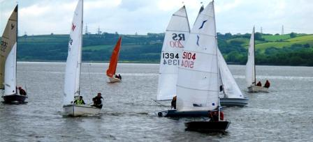

Upcoming Events:
The Spring Series races are now under way.
Warmer weather should bring the sea breeze in during the afternoons
There are General Handicap, Solo and Laser races, all on the water at the same time
2011 Offshore Challenge Event

The Offshore event is taking place on 28th and 29th of June, as part of the Llansteffan Open Weekend.
|
Event Schedule
OPEN SERIES
The following are open to Non-members -
- Autumn ‘Frostbite’series
- Winter ‘Blue Robin’ series
- October Regatta
- Pursuit
- Bank Holiday Mondays
- Christmas special events
Series fees for non-members £45.00 per 2-man boat £35.00 per 1-man boat £20.00 for Juniors per boat
Oct Regatta £15 per 2-man boat, £10 per 1-man boat, £5 juniors 1 day opens B/H, Christmas and Pursuit race £5.00 per boat.
2011 SPECIAL EVENTS
| | |
| CLUB PURSUIT RACE | | T.B.A. |
| OFFSHORE WEEKEND Llansteffan | | 25/26 June |
| SPECIAL NEEDS OLYMPIC KAYAKING | | 30/31 July |
| OCTOBER | | 1st & 2nd October Sat 12.00 pm (3 races) |
| CLUB REGATTA | | 6 races 5 to count Sun 10.30 am (3 races)
Open to Non-members |
| BOXING DAY | | Sun 26 December 12.00 pm (2 races)
General Handicap
Open to Non-members |
| NEW YEAR’S DAY | | Sun 1 January 2012 12.00 pm (2 races)
General Handicap
Open to Non-members |
SPRING
| | |
| SATURDAY | | 12th March to 25th June
General Handicap (2 races/day)
28 races 11 to count |
| SUNDAY (Early Series) | | 13th March to 26th June
Class Racing (1 race/day)
15 races 6 to count |
| SUNDAY (Late Series) | | 13th March to 26th June
Class Racing (2 races/day)
31 races 12 to count |
SUMMER
| | |
| TUESDAYS | | 3rd May to 6th September
Informal Sailing 19 Sessions |
| WEDNESDAYS | | 4th May to 7th September
General Handicap
Laser & Solo Class Racing
19 races 7 to count |
| SATURDAYS | | 2nd July to 24th September
General Handicap (2 races/day) 26 races 10 to count |
| | SUNDAYS (Early series) | | 3rd July to 25th September
Class Racing (1 race/day) 13 races 5 to count |
| SUNDAY (Late series) | | 3rd July to 25th September
Class Racing (2 races/day) 26 races 10 to count |
AUTUMN SERIES
Open to Non-members
| | |
| SUNDAY | | 9th October to 18th December
Class Racing (2 races/day) 22 races– 9 to count |
WINTER ‘BLUE ROBIN’ SERIES
Open to Non-members
| | |
| SUNDAY | | 8th January to 11th March 2012
General Handicap (2 races/day)
20 races-8 to count |
2011 BANK HOLIDAY SERIES
(Club Classes with 5 in first race)
All Bank Holidays are one day events, 3 races 2 to count, First start at 12.00 am
Open to Non-members
| | |
| EASTER | | Monday 25th April
| | MAY DAY | | Monday 2nd May
| | SPRING | | Monday 30th May
| | SUMMER | | Monday 29th August
|
|